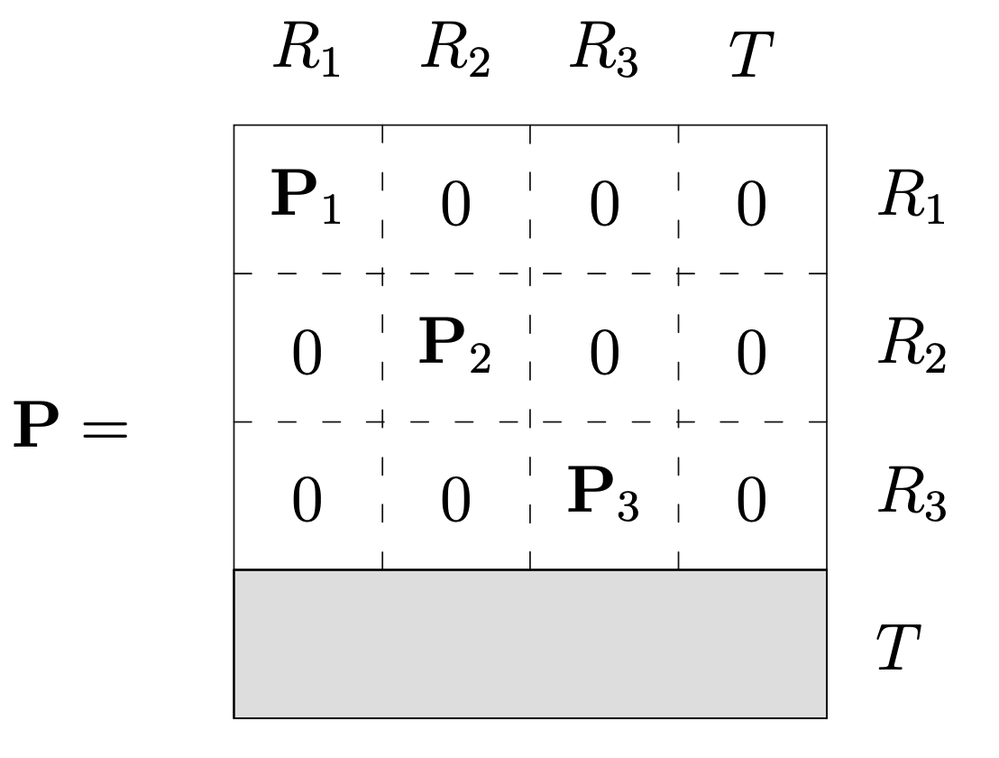

12wk-2: 마코프체인 (11)
5/23/23
강의영상
youtube: https://youtube.com/playlist?list=PLQqh36zP38-yZaqMvt2jojFKOeDaomqzi
예비학습
- 약어: \(X\)가 \(\mathbb{N}_0\)에서 값을 가지는 이산형확률변수이고 \({\boldsymbol \mu}^\top\) 가 \(X\)의 분포라고 하자. 이해를 위해서 아래와 같은 확률분포표를 가정한다면
| \(X\) | \(0\) | \(1\) | \(2\) |
|---|---|---|---|
| \(\mathbb{P}(X=k)\) | \(0.1\) | \(0.2\) | \(0.7\) |
\({\boldsymbol \mu}^\top = [0.1,0.2,0.7]\) 이다. 이럴 경우 평균은
- \(\mathbb{E}(X)= 0\times 0.1 + 1\times 0.2 + 2 \times 0.7\)
와 같이 표현가능한데, 이를 좀 더 명확하게 하기 위하여
- \(\mathbb{E}_{\boldsymbol \mu}(X)=0\times 0.1 + 1\times 0.2 + 2 \times 0.7\)
라고 표현하기도 한다. 마찬가지로
- \(\mathbb{P}(X=0)=0.1\)
- \(\mathbb{P}(X=1)=0.2\)
- \(\mathbb{P}(X=2)=0.7\)
를 좀 더 명확하게 하기 위해서
- \(\mathbb{P}_{\boldsymbol \mu}(X=0)=0.1\)
- \(\mathbb{P}_{\boldsymbol \mu}(X=1)=0.2\)
- \(\mathbb{P}_{\boldsymbol \mu}(X=2)=0.7\)
와 같이 표현하기도 한다.
- 예시: \(X\)의 분포 \({\boldsymbol \mu}\)와 \({\boldsymbol \nu}\)가 각각 아래와 같다고 하자.
\({\boldsymbol \mu}\)의 정의
| \(X\) | \(1\) | \(6\) |
|---|---|---|
| \(\mathbb{P}(X=k)\) | \(0\) | \(1\) |
\({\boldsymbol \nu}\)의 정의
| \(X\) | \(1\) | \(6\) |
|---|---|---|
| \(\mathbb{P}(X=k)\) | \(1\) | \(0\) |
이 경우 아래의 표현들이 가능하다.
- \(\mathbb{E}_{\boldsymbol \mu}(X)=6\), \(\mathbb{E}_{\boldsymbol \nu}(X)=1\)
- \(\mathbb{P}_{\boldsymbol \mu}(X=1)=0\), \(\mathbb{P}_{\boldsymbol \mu}(X=6)=1\), \(\mathbb{P}_{\boldsymbol \nu}(X=1)=1\), \(\mathbb{P}_{\boldsymbol \nu}(X=6)=0\)
- 약어: 확률변수 \(X\)가 \(X=x\)에서만 확률을 가지고 그 외에는 1이라고 할 경우 분포 \({\boldsymbol \mu}\)를 \({\boldsymbol \delta}_x\)라고 표현하기도 한다. 따라서 이 경우
- \(\mathbb{P}_{{\boldsymbol \delta}_x}(X=x)=1\), \(\mathbb{P}_{{\boldsymbol \delta}_x}(X\neq x)=0\)
- \(\mathbb{E}_{{\boldsymbol \delta}_x}(X)=x\)
와 같은 표현들이 가능하다.
- 예시: \(X\)의 분포 \({\boldsymbol \mu}\)와 \({\boldsymbol \nu}\)가 각각 아래와 같다고 하자.
\({\boldsymbol \mu}\)의 정의
| \(X\) | \(1\) | \(6\) |
|---|---|---|
| \(\mathbb{P}(X=k)\) | \(0\) | \(1\) |
\({\boldsymbol \nu}\)의 정의
| \(X\) | \(1\) | \(6\) |
|---|---|---|
| \(\mathbb{P}(X=k)\) | \(1\) | \(0\) |
이 경우 아래의 표현들이 가능하다. (??)1
- \(\mathbb{E}_{{\boldsymbol \delta}_6}(X)=6\), \(\mathbb{E}_{{\boldsymbol \delta}_1}(X)=1\)
- \(\mathbb{P}_{{\boldsymbol \delta}_6}(X=1)=0\), \(\mathbb{P}_{{\boldsymbol \delta}_6}(X=6)=1\), \(\mathbb{P}_{{\boldsymbol \delta}_1}(X=1)=1\), \(\mathbb{P}_{{\boldsymbol \delta}_1}(X=6)=0\)
- 약어: \(\{X_t\}\)가 상태공간 \(E\)에서 정의된 HMC 라고 하자.
- \(\mathbb{P}_{i}(X_t=k):=\mathbb{P}_{\boldsymbol {\boldsymbol \delta}_i}(X_t=k)=\mathbb{P}(X_t=k| X_0=i)\)2
- 1의 표현에서 \({\boldsymbol \delta}_x\) 대신에 일반적인 \({\boldsymbol \mu}\)를 쓰기도 함.
- \(\mathbb{P}_{\boldsymbol \pi}(X_t=k)=\pi_k\)3
\(\mathbb{P}_{i}\), \(\mathbb{P}_{\boldsymbol \pi}\) 등이 자명한 기호는 아니므로 교재마다 초반부에 정의하고 들어감헷갈리는 편임. 일반적인 기호와 충돌이 오지만 정상분포일 경우 그 의미가 같음.
nature (cont)
- 정의: \(\{X_t\}\)가 상태공간 \(E\)에서 정의된 HMC 라고 하자. \(y \in E\), \(t \in \mathbb{N}_0\)에 대하여 아래와 같은 기호를 정의하자.
- \(T_y = \min\{t: X_t=y, t\geq 1\}=\min\{t\geq 1: X_t=y\}\)
- \(P_y(T_y<\infty)\)
- 의미:
- 나그네가 마을 \(y\) 에 \(t=0\), \(t=2\), \(t=5\), \(t=88\) 에 방문하였다고 하자.
- \(\{t: X_t=y, t\geq 1\}=\{2,5,88\}\)
- \(\min\{t: X_t=y, t\geq 1\}=2\)
- \(T_y=\) 나그네가 마을 \(y\)에 처음으로 방문한 시점, 단 \(t=0\)인 경우는 제외함.
- \(T_y=\infty\) \(\Leftrightarrow\) 나그네가 마을 \(y\)에 갈 일이 없음
- \(T_y<\infty\) \(\Leftrightarrow\) 나그네가 마을 \(y\)에 언제가는 돌아옴
- \(\mathbb{P}_y(T_y<\infty)=\) 초기상태를 마을 \(y\)에 출발한 나그네4가 언젠가 다시 \(y\)로 돌아올 확률
- 7의 의미는 “마을 \(y\)에 존재하던 나그네가 언젠가 다시 마을 \(y\)로 돌아올 확률”이라 해석해도 무방하다.
- 정의: \(\{X_t\}\)가 상태공간 \(E\)에서 정의된 HMC 라고 하자. \(T_i\)를 상태 \(i \in E\)에 대한 return time 이라고 하자. 만약에 상태 \(i \in E\) 가 아래의 식을 만족한다면
\[\mathbb{P}_i(T_i<\infty)=1\]
\(i\)는 recurrent 하다고 표현하고, 그렇지 않으면 \(i\)는 transient 하다고 표현한다. 만약에 recurrent state \(i\)가 아래식을 만족한다면
\[\mathbb{E}_i[T_i] < \infty\]
state \(i\)를 positive recurrent 라고 하고 그렇지 않으면 null recurrent 라고 한다.
- 이론: HMC \(\{X_t\}\)가 IRR 이라면 모든 \(i\)는 같은 nature 를 가진다. 즉 \(\{X_t\}\)가 IRR 이면 아래중의 하나이다.
- 모든 상태가 transient 하다.
- 모든 상태가 null recurrent 하다.
- 모든 상태가 positive recurrent 하다.
HMC \(\{X_t\}\)의 모든상태가 positive recurrent 이면, positive recurrent markov chain 이라고 간단히 부른다. 나머지 역시 마찬가지
- Thm(상태의분해1): \(\{X_t\}\)가 HMC라고 하고, \(E\)를 \(\{X_t\}\)가 정의되는 상태공간이라고 하자. 기호 \(\leftrightarrow\)는 \(E\)에서 정의된 euivalence relation이 된다. 따라서 집합 \(E\)의 원소는 \(\leftrightarrow\)를 기준으로 아래와 같이 나눌 수 있다.
\[E = \uplus_{k=1}^{\infty} E_k\]
이때
- \(E_1,E_2,E_3,\dots\) 는 서로소
- \(\forall k:\) \(E_k\) 는 IRR
이다.
- Thm(상태의분해2)(Durrett 2019, Thm 5.3.5): \(\{X_t\}\)가 HMC라고 하고, \(E\)를 \(\{X_t\}\)가 정의되는 상태공간이라고 하자. 집합 \(E\)는 아래와 같이 분해할 수 있다.
\[E = \uplus_{k=1}^{\infty} E_k\]
이때
- \(E_1,E_2,E_3,\dots\) 는 서로소
- \(\forall k:\) \(E_k\) 는 IRR
- \(\forall k:\) \(E_k\) 의 모든 원소는 PR 이거나 NR 이거나 TR
이다.
- 따라서 transition matrix는 일반적으로 아래와 같이 분해하여 생각할 수 있다.

nature와 정상분포
- 정의 \(\{X_t\}\)가 HMC라고 하자. 아래의 식을 만족하는
\[\tilde{\boldsymbol \pi}^\top {\bf P} = \tilde{\boldsymbol \pi}^\top\]
\({\bf 0}\)이 아닌 \(\tilde{\boldsymbol \pi}^\top\) 를 invariant measure 라고 한다. 만약에 \(\tilde{\boldsymbol \pi}^\top\) 이 분포의 정의를 만족하면 stationary measure 혹은 stationary distribution 이라고 부른다.
- 예시: “오른쪽으로만 갈래” 예제에서는
\[\tilde{\boldsymbol \pi}^\top = [1,1,1,\dots]\]
이 수식
\[\tilde{\boldsymbol \pi}^\top {\bf P} = \tilde{\boldsymbol \pi}^\top\]
을 만족한다. 따라서 이 예제에서 \(\tilde{\boldsymbol \pi}^\top = [1,1,1,\dots]\) 은 invariant measure 이다.
- \(\{X_t\}\)가 HMC라고 하자. 각각에 대하여 아래가 성립한다.
| IRR | nature | \(\exists! \tilde{\boldsymbol \pi}\) up to multiplier | \(\exists! {\boldsymbol \pi}\) | 에르고딕정리(\(\approx\)LLN) |
|---|---|---|---|---|
| \(O\) | PR | \(O\) | \(O\) | \(O\) |
| \(O\) | NR | \(O\) | \(X\) | \(X\) |
| \(O\) | TR | \(\Delta\) | \(X\) | \(X\) |
- 이론: \(\{X_t\}\)가 IRR-HMC5 라고 하자. \(\{X_t\}\)가 정상분포를 가진다는 조건과 유일한 정상분포를 가질 조건은 동치이다.
- 즉 \(\{X_t\}\)가 IRR-HMC 일때, 정상분포가 존재한다는 사실만 보이면 자동으로 유일성이 보장된다.
- Thm: \(\{X_t\}\)가 IRR-HMC 라고 하자. 그러면 positvite recurrent 와 \(\exists! {\boldsymbol \pi}\) 은 동치조건이다. 즉
- IRR-HMC \(\{X_t\}\) 가 positive recurrent 하다면 항상 \(\{X_t\}\) 는 유일한 정상분포를 가진다.
- IRR-HMC \(\{X_t\}\) 가 정상분포를 가지면 (그 분포는 유일해지고) \(\{X_t\}\)는 항상 positive recurrent 하다.